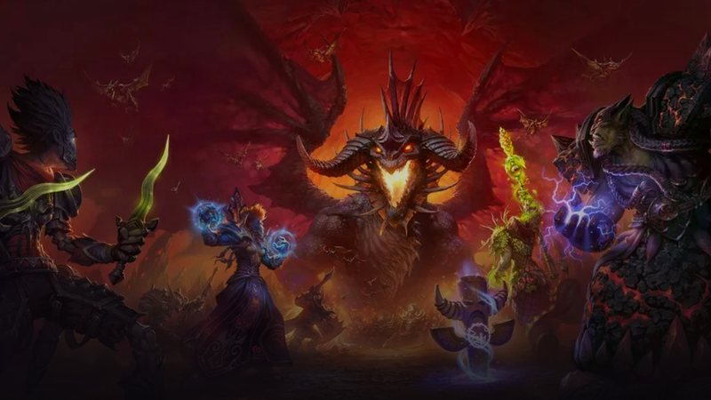

News › Secrets de donjon
Secrets de donjon : le boss caché de Dalaran et la hache qui mine sans métier
25 novembre 2026
Deux petits secrets remis en avant par les sites anglais cette semaine : un boss qu'on ne voit jamais sans préparation, et une arme bien pratique pour les non-mineurs.

Lyn the Ignored, le boss secret de la Cité de Dalaran
Dans la Cité de Dalaran (niveaux 28 à 33), un nécromancien n'apparaît jamais tout seul. Pour le faire venir :
- Donjon d'Ombrecroc : après avoir tué l'Archimage Arugal, clique sur le livre posé sur sa table pour récupérer le Tome noir.
- Forêt des Pins-Argentés : à Ambermill, dans le bâtiment au fond du village (63.4, 64.3), utilise le Tome noir près du cristal bleu posé à côté de l'Archimage Ataeric. Il devient le Tome de Dalaran.
- Cité de Dalaran : après le premier boss, Atrexis le Chevalier de la tombe, prends le tunnel des égouts jusqu'à une petite salle avec un cercle violet au sol. Nettoie la salle, puis utilise le Tome de Dalaran sur le cercle.
- Lyn the Ignored arrive après une courte scène. C'est un élite de niveau 31 qui peut lâcher du bon équipement de niveau 33.
- Le tome n'est pas consommé : il a juste 3 minutes de recharge. Tu peux donc le réutiliser à chaque passage.
Rockslicer : miner sans être mineur
- La hache à deux mains Rockslicer, lâchée par Rhahk'Zor, le premier boss des Mortemines, a reçu un pouvoir dans Forever.
- Tant que tu l'as, tu peux miner les filons de cuivre, d'étain, d'argent et de fer, même sans le métier Minage.
- Elle a 30 charges. Une fois vides, elle reste une simple arme.
- Pratique pour un forgeron ou un ingénieur qui n'a pas pris le minage. Voir aussi notre page Métiers.
Sources : wowforever.news (articles d'Icy Veins du 24 novembre 2026), Zockify et WoW Handbook (Lyn the Ignored), LFCarry (Rockslicer). Noms français à confirmer en jeu.